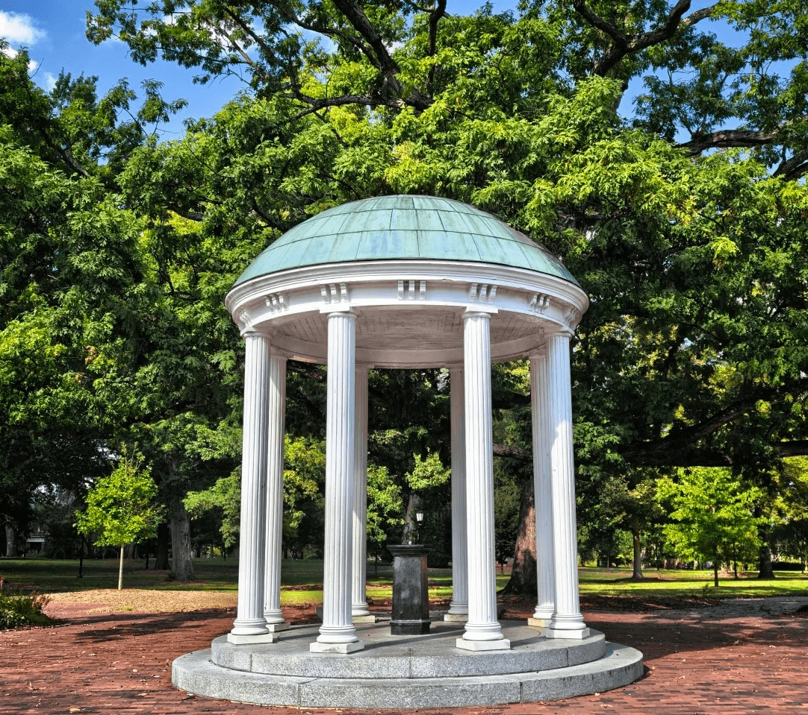

I am a graduate student at UNC school of education
I focus on the field of educational entrepreneurship, seeking new market opportunities.

Master UNC(MEITE)
UNC University, 2026
Dissertation: "Neural Approaches to Semantic Parsing"
Undergraduate international communication
the university of Nottingham,2023
I served as a Volunteer Chinese Language Instructor in an Online Global Education Program, designing original lessons for over 200 students across Asia and Africa.
My work in educational initiatives and community research has been recognized, including receiving the "Outstanding Volunteer" award and top distinctions in academic projects.
Outside of my academic pursuits, I am passionate about languages and cross-cultural communication. I enjoy learning new languages, currently studying Korean and Malay.